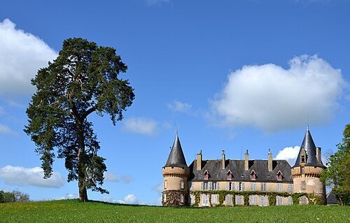

Château de Villemolin
Un site habité, vivant et romantique en Haut Nivernais
Construit au XIVe siècle sur l’emplacement d’une villa gallo-romaine, la Villa Molini, le château de Villemolin est en forme de fer à cheval, flanqué de trois tours. Il est occupé depuis près de cinq siècles par la famille de Certaines.
Organiser une visiteOuvert juillet et août, tous les jours sauf samedi, 14h-18h. Groupes toute l'année sur RDV.
Une famille, 7 siècles de transmission
Propriété initiale de la Famille de la Corcelle, puis Champignolle et Bascoing, le château entre en 1538 dans la famille de Certaines par le mariage de Barbe de Bascoing avec Etienne de Certaines. Il n’a jamais été vendu.
XVe, XVIIe, XIXe siècles
Chapelle de 1830-1839 avec une Pietà Renaissance, don des Chartreux du Val-Saint-Georges. Communs importants, glacière souterraine, orangerie, selleries, écuries et parc.
Sept siècles d'histoire: Villemolin entre continuités et transformations
- Antiquité : Villa Molini - Site gallo-romain dans la forêt actuelle
- XVe : Première mention écrite - hostel fort, tour, motte, fossés
- XVIIe : Remaniement des tours et des intérieurs
- XVIIIe : Une troisième aile est ajoutée flanquée d'une terrasse
- XIXe : Remaniements importants, et construction d'une nouvelle chapelle
- 16 juin 1978 : Chapelle inscrite Monuments Historiques
- 9 avril 2002 : Ensemble du site inscrit (façades, toitures, terrasse, communs, orangerie, galerie, puits, glacière, portail)
Le saviez-vous ?
Le nom Villemolin vient de Villa Molini. Le site est à 20 km au sud de Vézelay et à 30 km au sud-ouest d'Avallon, en bordure du Parc Naturel Régional du Morvan.
Propriétaire actuel : Famille de Certaines. Protection MH : PA00112791.
Les visites de Villemolin

Château, chapelle, communs
- Salons, bibliothèque, vestibules, salle à manger, cuisines, escalier
- Chapelle & Pietà XVe
- Ecuries, orangerie, glacière souterraine
- Espace cinéma : décors et costumes
- Visite en français ou anglais
Dates et accès
Juillet et août: tous les jours sauf le samedi de 14h00 à 18h00. Visites guidées, intérieurs et extérieurs, en français et en anglais.
July and August: guided tours in English, daily except on Saturday, from 2 pm to 6pm.
Hors saison: possibilités de visites sur rendez-vous préalable.
Un foyer toujours bien vivant
Les pièces ouvertes à la visite, toujours habitées, témoignent non seulement des modes de vie des époques passées, mais aussi de la vie actuelle dans un monument historique.
Expositions, séminaires, tournages
Possibilités variées d’organisation d’expositions, de présentations commerciales, de photos publicitaires, de tournages de films etc.
Location de l’Orangerie
L'Orangerie avec tout le matériel pour organiser vos réceptions, expositions, présentations commerciales ou amicales.
Demander un devisPhotos & Films
Cadre authentique préservé, parc à l’anglaise, intérieurs meublés. Idéal pour shootings publicitaires, clips, longs-métrages. Accès logistique facilité.
Tournage Bruno Podalydès (2002)
Le Château de Villemolin a servi de décor principal pour Le Mystère de la Chambre Jaune. Des éléments de décor du film sont toujours accessibles aux visiteurs : locaux, costumes et accessoires.
Avec Denis Podalydès dans le rôle de Rouletabille. Souvenirs visibles lors de la visite guidée.
Venir à Villemolin
Adresse
Château de Villemolin
6, rue du Château de Villemolin
58800 Anthien
Nièvre, Bourgogne-Franche-Comté, France
Téléphone : 06 73 19 78 32
GPS : 47.28722, 3.71972
Coordonnées : 47°17'14"N 3°43'11"E
Propriété privée habitée. Ouvert juillet-août sauf samedi 14h-18h, matin 10h-12h sur RDV. Groupes toute l'année.
Ouvrir dans Google MapsÉcrire
- Entre Corbigny et Vézelay - 30km d'Avallon
- Parking visiteurs devant le portail
- Accès PMR (prévenir avant)